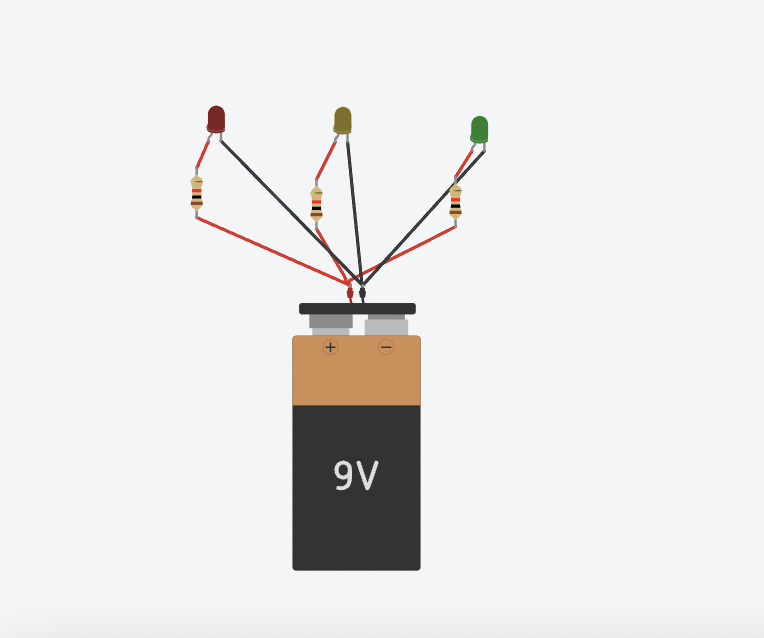
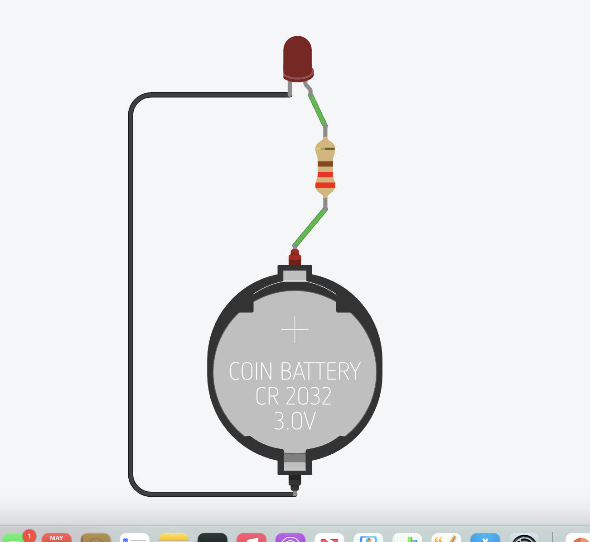
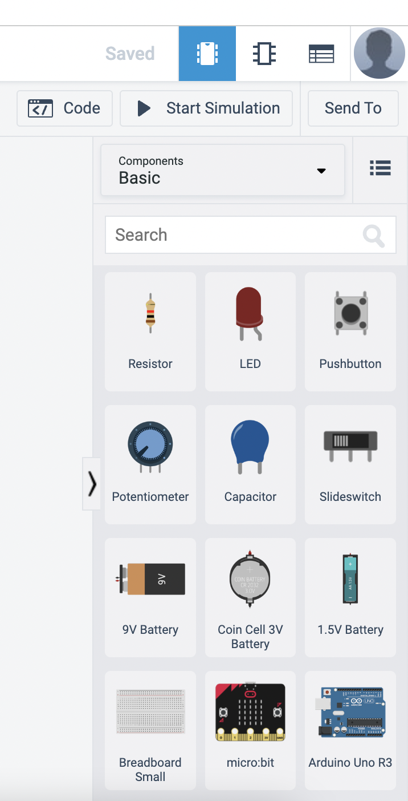

Do It! Tinkercad Circuits: Create a Stoplight
 The Challenge
The Challenge
Your challenge is to use Tinkercad Circuits to design and test circuits. Explore how different circuit parts affect how a circuit works. Then, students will create and stoplight using LEDs.

Project Steps
-
Build and Test Circuits
-
Create a Stoplight
Build and Test Circuits
Start by completing one or more Circuit Tutorials, then design and build your own circuits. Use the "Start Simulation" button to test your circuits. Try creating a basic open and closed circuit. Play around with creating series and parallel circuit.

Create a Stoplight
- First you will need to decide what battery to use for your circuit. You will notice that each battery has a voltage number. This will determine how much current pressure is being pushed through the circuit. Pick your battery to start your parallel circuit.
- Next you will need to grab three resistors for your circuits.
- Now you will choose your three LED lights. Once you have those set up by your batteries, you will change their color based off of stop light order.
- Lastly, you will add your wires connecting all of your circuits. Sometimes it is visually helpful to change your + wire (anode) to red and your – wire (cathode) to black.
- Once you have all components in order press start simulation.
- If you have any errors try to fix and start simulation over.
- When you have created a working stoplight, take a screenshot of your circuit to upload in your project submission.
